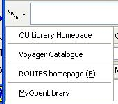

February 13, 2006
Roll On Loose Coupling...
I've been thinking a lot about what OU 2.0 (?!) could look like lately, and how if we were going to make a play for e-learning world player status - which I think is one of the scenario planning dreams, I suspect - we'd need to get something going with someone like Google (after all, if there's a Dell portal on Google, why not an OU one in the UK, or even better, Africa, to help with the open content drive there? (It'd be even better if we could get buy in to the Google downloader/updater so we can ship our software through their channel?)).
Anyway - I just saw this, which is not the same thing at all:
San José City College (SJCC) has embarked on a technology improvement program, and for the first time will be offering student email accounts. ... [Google are] testing a new service with the school by hosting Gmail accounts with SJCC domain addresses (like student@jaguars.sjcc.edu), plus admin tools for efficient account management. Official Google Blog: Big mail on campus
although it did, for some reason, also remind me of Microsoft's custom domains, which is completely different again...
And this is completely different too:
iTunes U* is a free, hosted service for colleges and universities that provides easy access to your educational content, including lectures and interviews 24 hours a day, 7 days a week. iTunes University
They both made me think though... not least because it's more stuff not-without-precedent for the mix...
And they're also very 2.0, in the sense that the universities seem to be being encouraged to outsource services to the very services that their students are likely to be using anyway (or which those services would like the students to be using just anyway if they aren't already using them)...
So it makes sense, doesn't it, in a backscratchy sort of way, especially if you see the online services as lifestyle services making a grab for hearts and minds in an oh, so helpful way...
(I guess the various bookscanning projects will soon remove the need for our academic libraries, for example... or not....)
AJAX Doesn't Stand for Anything...
At the Carson Web 2.0 Summit last week (annotated here, tag: futureofwebapps), several speakers repeated the message that what AJAX is supposed to stand for (specifically, Asynchronous JavaScript And XML) is actually a misnomer, as the only thing that's actually required is the asynchronous bit (and I'd take issue with that were it not for the fact that Javascript is only single threaded (at least, for the moment)).
So - what does it stand for? Some combination of DOM Manipulation, CSS and remote scripting, mashed together to give a rich browser based app, I reckon...
What can't be denied, however, was that coinng the AJAX moniker did give momentum to the popular uptake of the AJAX way of doing things, along with a few widely cited - and experienced - AJAX apps (the GMails, and the rest).
So - what does AJAX stand for? Neat web app interfaces, I'd say, rather than someone out of a Greek tragedy, a series of doomed automobiles or Asynchronous JavaScript And XML.
February 12, 2006
OU VLE Programme Blog
Several months on from the OU's stated intention to adopt Moodle for the OU VLE, VLE programme director Niall Sclater has been doing the rounds of the OU in the last week or two giving staff an overview of what we can expect: OU readers can check out a Berrill Stadium presentation recording on the VLE or check out the VLE programme intranet site.
One of the things that was mentioned was that student blogs and wikis would be among the first things to be released, around about May of this year (hmm - that's interesting - the Moodle roadmap has blogs down as a late Feb. beta - good to know that OUr students will be getting a proven blogging system then...)
There are issues of course regarding the propriety of student contributed content in public web pages hosted on the .open.ac.uk, as well as any unsavoury trackbacks or comments that may get posted (this blog, for example, was shut down by the .open.ac.uk domain admin when I got some porn-related comment spam last year)... so I guess public comments and trackbacks will be disabled (as I've had to do on this blog) unless the blogging engine takes precautions...I'm not sure who'll be moderating the blogs though (all OU online conferences are moderated by somebody, and I think that all of them are private in the sense that only people who've logged in have access to them).
Blogs for staff will apparently come a little bit after blogs for students (that's okay then...). The meantime/current solution is to use the AACS blogs, or this student blogging system. I get the impression that the desire is for the VLE blogging system to become the norm for staff eventually, so I don't know if this means that the AACS system will be forcibly shut down, or whether it will be allowed to continue in a mixed blogging economy.
I assume too that Moodle will be centralising the blogging service, rather than loosely coupling to a proven, pre-existing blogging system - perhaps there's someone out there with more knowledge of Moodle development who can let me know (by email, if poss - there's a link on te sidebar on the main page of this blog) what the proposed blogging solution is for Moodle?
Anyway - the intention not to support OU internal blogging solutions that already exist seems pretty blatant:

Here's the link: OU VLE Programme Blog (external site!)...;-)
February 10, 2006
OU Library Toolbar Redux
Having tried to demo my OU Library Firefox Toolbarthe other day, only to find that it couldn't be installed in Firefox 1.5, I've made the necessary tweaks and uploaded a version that should work... You can install it from here.
And just in case you need a reminder, here's what it looks like:

The Library Lookup is, of course, Udell's - if there's a URL in the browser URL address line, as for example when looking at a book on Amazon:

...you can just click on the Library lookup button and that book will be looked up in the OU library catalogue:

There are a few quick links in the toolbar too:

OU Library Record Bookmarklet
Having taken the afternoon off, I felt like a bit of guilt free play, so I had a tinker with a Library Record bookmarklet generator (Firefox only?) that creates a bookmarklet that will take you straight to your OU library record:
From the screenshot, you'll also notice that the app will also generate a link to an RSS feed that lists a user's current loans from the library (described previously here.
Update: I've just modded the generator so that it can - possibly - generate bookmarklets for other Voyager library catalogues:
Update: the generator now also generates a LibraryLookup bookmarklet, along with the My Library Record bookmarklet.
February 03, 2006
IE Starts to Look Interesting...
Old news to most perhaps, but if I had a day to play, I'd probably commit it to IE this week for a couple of reasons.
First up, there's a new Google toolbar (v. 4) for IE, though not for Firefox yet. Niall Kennedy provides a neat overview of the online bookmarking feature and the toolbar API (which lets you "create custom buttons using a custom XML descriptor and extended functionality using RDF, RSS, and Atom feeds"). For more info, check out the API documentation.
Secondly, IE7 is now out in public Beta 2 Preview for XP. It looks quite pretty packed with RSS/feed goodies (bringing with it a preview of the Windows RSS platform). It also has improved CSS support over previous Microsoft offerings. I imagine there'll be rolling news items about things to look out for on the IE blog, so that may be one to watch for a week or two...
PS This post - a simple news relay item, in effect, without added value in terms of potential HE applications or mashup possibilities - is a little out of keeping with the content I usually try to post: simple news relay items are better managed with focussed FYI emails or adding to a bookmarking feed, I think.
However, as I've started trying to evangelise the role that blogging could play in moving information around the OU, and into the OU, it may be that I can provide value to OU subscribers by simply relaying news items... (hmm - I wonder if I should set up a News from OUtside blog to do this...?)